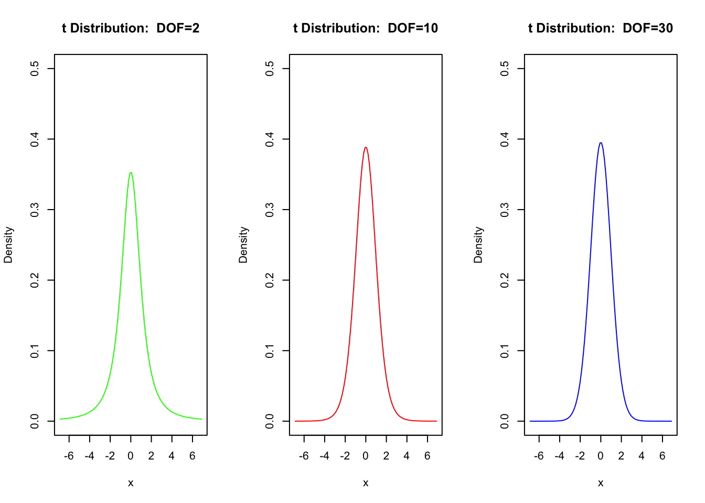
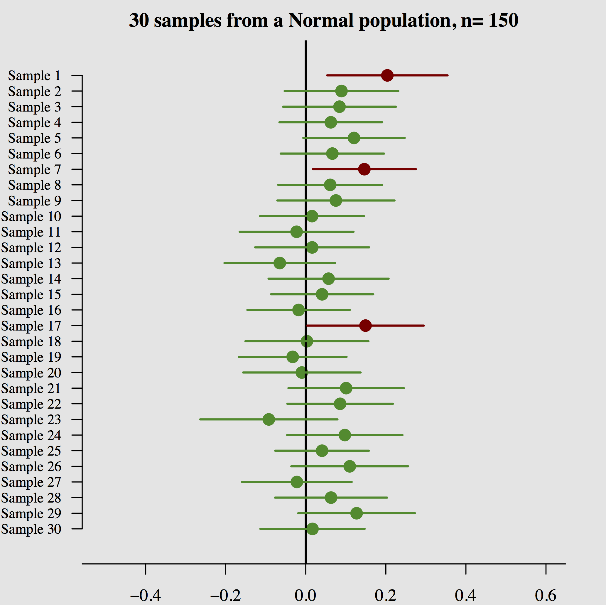

26 Confidence intervals in R
26.1 Learning Goals
Plotting the t distribution, with different degrees of freedom
Building confidence intervals (CIs)
26.2 Example Graphs and R Code:
par(mfrow=c(1,3))
x.numbers <- seq(from=-6.869, to=6.869, length.out=100)
plot(x=x.numbers, y=dt(x.numbers, df=2), xlab="x", ylab="Density",
main=paste("t Distribution: DOF=2"),
type="l",col="green",ylim=c(0,0.5))
plot(x=x.numbers, y=dt(x.numbers,df=10), xlab="x", ylab="Density",
main=paste("t Distribution: DOF=10"),
type="l",col="red",ylim=c(0,0.5))
plot(x=x.numbers, y=dt(x.numbers,df=30), xlab="x", ylab="Density",
main=paste("t Distribution: DOF=30"),
type="l",col="blue",ylim=c(0,0.5))
26.3 What is a Confidence Interval?
Interval estimate of a population parameter
Takes into account the uncertainty
Depends on the data and confidence level
Confidence level: If confidence intervals are constructed across manyseparate data analyses, the proportion of such intervals that contain the true value of the parameter will match the confidence level. For exampl, if we had a 90% confidence interval, we would expect 90% of confidence intervals we construct to include the true parameter \(\mu\).
Example
This is is 30 samples (n=150) from a normal population (\(\mu=0\)) and the resulting 90% confidence interval.
Out of the 30 confidence intervals, only 27 of them (90%) include \(\mu\)!
- What happens when we increase/decrease confidence level? The confidence intervals will get wider and more of them will include \(\mu\).
26.4 Confidence Intervals for the Mean of Populations
Obtain \(\bar{y}=\frac{\sum{y_i}}{n}\)
Obtain \(\sigma_{\bar{y}}=\frac{\sigma}{\sqrt{n}}\) or \(\hat{\sigma}_{\bar{y}}=\frac{S}{\sqrt{n}}\)
Choose a confidence level
Obtain confidence coefficient: \(\frac{\text{confidence level}}{100}\)
Find the Z-score that corresponds to \(\frac{(\text{1-confidence coefficient})}{2}\) [Normal Table or R]
Confidence Interval for your chosen confidence level:
(\(\bar{y}-z*\sigma_{\bar{y}},\bar{y}+z*\sigma_{\bar{y}}\))
26.5 In R:
26.5.1 Numerical Summaries:
- Get the mean, standard deviation and number of observations of thevariable you are interested in
26.5.2 Normal Quantiles
- The
qnorm()gives you the required z-score.
26.5.3 Code
Obtain the Z- score and save it in an object called z.score:
z.score = qnorm(1-confidence coefficient/2)For example, for a 99% confidence interval, I could use
z.score = qnorm((1-.01/2))
z.score## [1] 2.575829Get mean, sd, and n of the variable and save in appropriately named objects:
mean.variable = mean(nameofdataset$nameofvariable,na.rm=T)
sd.variable = sd(nameofdataset$nameofvariable,na.rm=T)
n = length(na.omit(nameofdataset$nameofvariable))Remember that R stores missing data as NA. So the na.omit() removes missing data from the vector. And the na.rm=T tells R to ignore missing data when calculating the standard deviation or the mean.
Compute lower bound:
mean.variable - z.score*sd.variable/sqrt(n)Compute upper bound:
mean.variable+ z.score*sd.variable/sqrt(n)